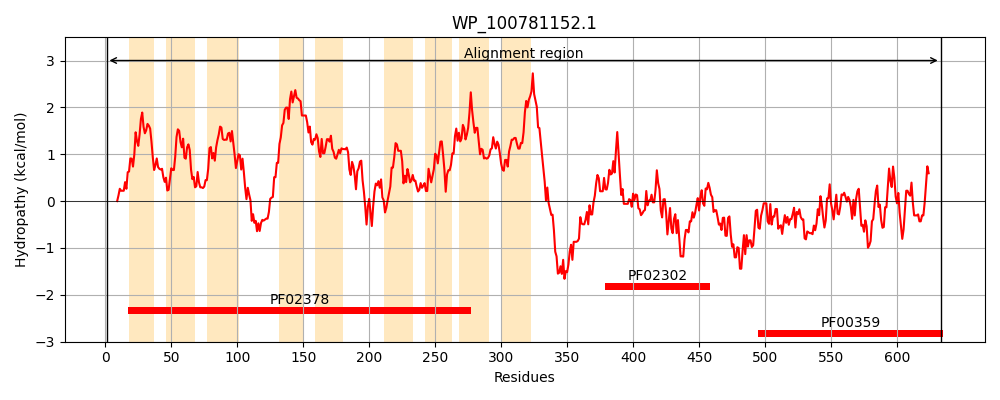
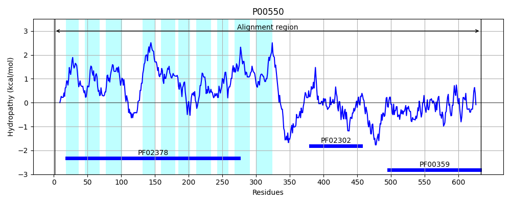
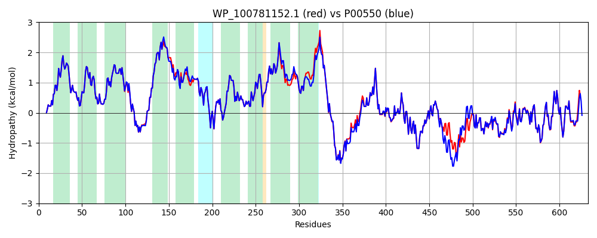

Hit Accession: P00550
Hit TCID: 4.A.2.1.2
Hit Description: gnl|BL_ORD_ID|8175 gnl|TC-DB|P00550|4.A.2.1.2 PTS SYSTEM, MANNITOL-SPECIFIC IIABC COMPONENT (EIIABC-MTL) (MANNITOL- PERMEASE IIABC COMPONENT) (PHOSPHOTRANSFERASE ENZYME II, ABC COMPONENT) (EC 2.7.1.69) (EII-MTL) - Escherichia coli.
Mach Len: 633
e:0.000000
Query TMS Count : 9
Hit TMS Count: 10
TMS-Overlap Score: 9.900000
Predicted Substrates:CHEBI:6686;D-mannitol
BLAST Alignment:
Score: 3027 , Bit scores: 1170 bits, E-value: 0.0e+00, Alignment length: 633, Percentage identity: 95
Query: 1 MSSDIKIKVQSFGRFLSNMVMPNIGAFIAWGIITALFIPTGWLPNETLAKLVGPMITYLLPLLIGYTGGKLVGGERGGVVGAITTMGVIVGADMPMFLGSMIAGPLGGYCIKKFDNWVDGKIKSGFEMLVNNFSAGIIGMILAILAFLGIGPAVEVLSKILAAGVNFMVAHDMLPLASIFVEPAKILFLNNAINHGIFSPLGIQQSHELGKSIFFLIEANPGPGMGVLLAYMFFGRGSAKQSAGGAAIIHFLGGIHEIYFPYVLMNPRLILAVILGGMTGVFTLTILNGGLVSPASPGSILAVLAMTPKGAYFANIAAIIAAMAVSFVVSAVLLKTSKVKEEDDIEAATRRMHDMKAESKGASPLAAGNVTNDLSHVRKIIVACDAGMGSSAMGAGVLRKKVQDAGLSNISVTNSAINNLPPDVDLVITHRDLTERAMRQVPQAQHISLTNFLDSGLYTSLTERLVAAQRHIENEVKVTDSLKDSFDDGDKNLFQLGADNIFLGRKAATKEEAIRFAGEQLVKGGYVKPEYVQAMLDREKLTSTYLGESIAVPHGTIEAKDRVLKTGVVFCQYPEGVRFGEDEDDVARLVIGIAARNNEHIQVITSLTNALDDETVIERLAKTTSVDEVLALL 633
MSSDIKIKVQSFGRFLSNMVMPNIGAFIAWGIITALFIPTGWLPNETLAKLVGPMITYLLPLLIGYTGGKLVGGERGGVVGAITTMGVIVGADMPMFLGSMIAGPLGG+CIK FD WVDGKIKSGFEMLVNNFSAGIIGMILAILAFLGIGP VE LSK+LAAGVNFMV HDMLPLASIFVEPAKILFLNNAINHGIFSPLGIQQSHELGKSIFFLIEANPGPGMGVLLAYMFFGRGSAKQSAGGAAIIHFLGGIHEIYFPYVLMNPRLILAVILGGMTGVFTLTIL GGLVSPASPGSILAVLAMTPKGAYFANIA + AAMAVSFVVSA+LLKTSKVKEEDDIEAATRRM DMKAESKGASPL+AG+VTNDLSHVRKIIVACDAGMGSSAMGAGVLRKK+QDAGLS ISVTNSAINNLPPDVDLVITHRDLTERAMRQVPQAQHISLTNFLDSGLYTSLTERLVAAQRH NE KV DSLKDSFDD NLF+LGA+NIFLGRKAATKEEAIRFAGEQLVKGGYV+PEYVQAMLDREKLT TYLGESIAVPHGT+EAKDRVLKTGVVFCQYPEGVRFGE+EDD+ARLVIGIAARNNEHIQVITSLTNALDDE+VIERLA TTSVDEVL LL
Sbjct: 1 MSSDIKIKVQSFGRFLSNMVMPNIGAFIAWGIITALFIPTGWLPNETLAKLVGPMITYLLPLLIGYTGGKLVGGERGGVVGAITTMGVIVGADMPMFLGSMIAGPLGGWCIKHFDRWVDGKIKSGFEMLVNNFSAGIIGMILAILAFLGIGPIVEALSKMLAAGVNFMVVHDMLPLASIFVEPAKILFLNNAINHGIFSPLGIQQSHELGKSIFFLIEANPGPGMGVLLAYMFFGRGSAKQSAGGAAIIHFLGGIHEIYFPYVLMNPRLILAVILGGMTGVFTLTILGGGLVSPASPGSILAVLAMTPKGAYFANIAGVCAAMAVSFVVSAILLKTSKVKEEDDIEAATRRMQDMKAESKGASPLSAGDVTNDLSHVRKIIVACDAGMGSSAMGAGVLRKKIQDAGLSQISVTNSAINNLPPDVDLVITHRDLTERAMRQVPQAQHISLTNFLDSGLYTSLTERLVAAQRHTANEEKVKDSLKDSFDDSSANLFKLGAENIFLGRKAATKEEAIRFAGEQLVKGGYVEPEYVQAMLDREKLTPTYLGESIAVPHGTVEAKDRVLKTGVVFCQYPEGVRFGEEEDDIARLVIGIAARNNEHIQVITSLTNALDDESVIERLAHTTSVDEVLELL 633 | Protein Hydropathy Plots: |
|---|
|  |  |
Pairwise Alignment-Hydropathy Plot:
|
|---|
|  |